Projets
BDC
Refonte d'un système national d'autorisation de prêts. Réduction du cycle de validation de 10 jours à 24 heures, facilitant 240 M$ de transactions.

Bell Canada
Benchmark, tests utilisateurs et audit d'accessibilité pour Bell Canada. Exemple d'application au portail EPP.

Boires.ca
Design d'une plateforme spécialisée vin. Alignement des règles d'affaires et définition des parcours utilisateurs.

